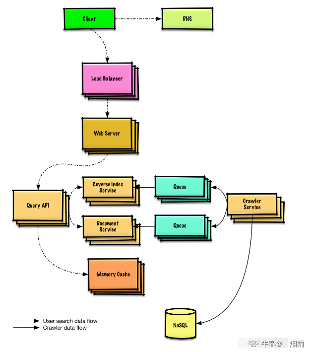

系统设计基础
解题步骤
剖析使用场景
剖析的点：
- 系统的功能是什么
- 系统的目标群体是什么
- 系统的用户量有多大
- 希望每秒钟处理多少请求？
- 希望处理多少数据？
- 希望的读写比率？
高层级的设计
画出主要的组件和连接，也就是架构图
网络爬虫示意图：

设计核心组件
对每一个核心组件进行具体地分析。比如架构中涉及：mysql数据库、加密安全、中间件、消息队列、应用系统等，那就要细分问题，如：
数据库查找、数据库模型、分库分表产生的Hash 碰撞
MD5和 Base62加密算法
SQL 还是 NoSQL
消息队列堆积问题、并发量等
API 和面向对象设计
优化系统
分析系统瓶颈，常见的方法：
- 水平拓展：增加服务器集群等
- 数据库分片
常见的优化指标：
响应时间：发出请求 -> 接收响应经过的时间；反应系统的快慢
并发量：系统能够同时处理请求的数目，反应系统的负载
吞吐量：单位时间内系统处理的请求数量，体现系统的整体处理能力。
- QPS：服务器每秒可以执行的查询次数
- TPS：服务器每秒处理的事务数
- 并发数：QPS * 平均响应时间
系统活跃度
- PV：页面点击量或者浏览量，用户每次对网站中的每个页面访问均被记录一个PV，多次访问则会累计。
- UV：独立访客，统计一天内访问网站的用户数，一个用户多次访问网站算一个用户
- IP：一天内访问某站点的IP总数，以用户的IP地址作为统计的指标，相同IP多次访问某站点算一次
- DAU：日活跃用户数量。
- MAU：月活跃用户人数。
常用软件的QPS
- Nginx：一般Nginx的QPS是比较大的，单机的可达到30万
- MySQL：对于读操作可达几百k，对于写操作更低，大概只有100k
- Redis：大概在几万左右，像set命令甚至可达10万
- Tomcat：单机 Tomcat 的QPS 在 2万左右。
- Memcached：大概在几十万左右
本博客所有文章除特别声明外，均采用 CC BY-NC-SA 4.0 许可协议。转载请注明来自 VLS_Blog！